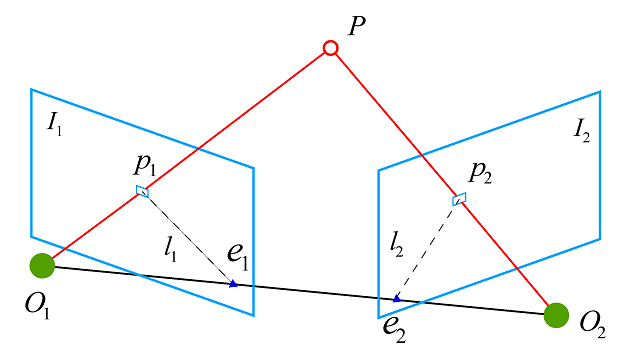
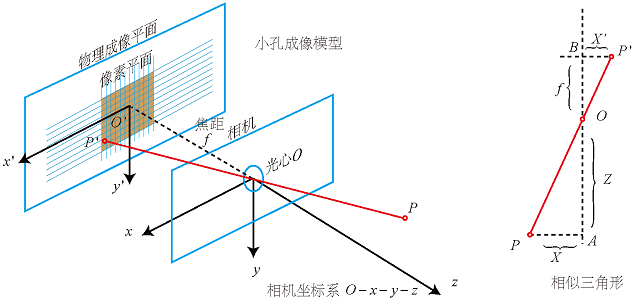
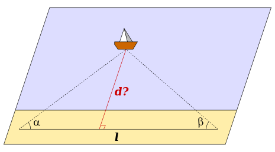
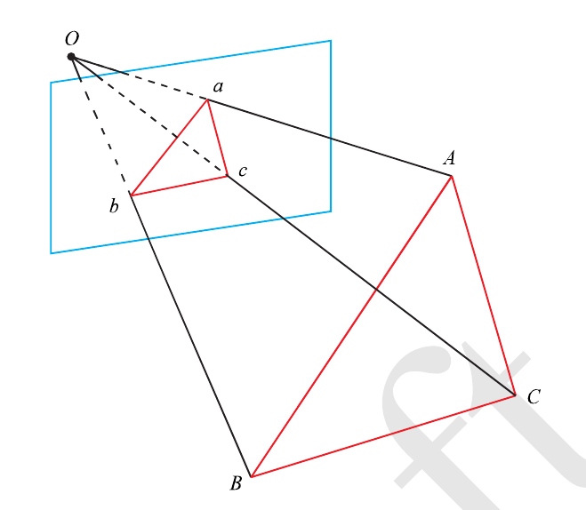
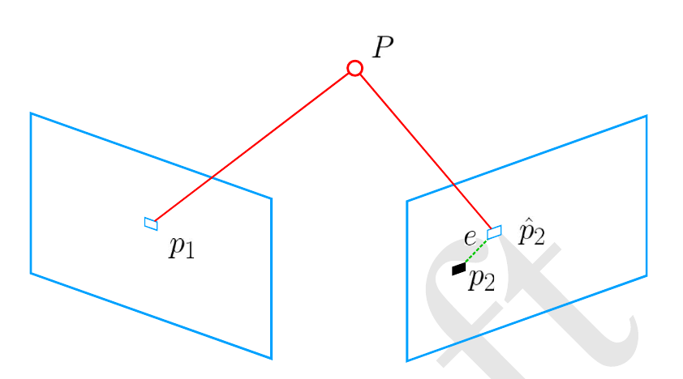

相机位姿估计入门
相机位姿估计是指给定若干图像，估计其中相机运动的问题。求解方法通常分特征点法和直接法两种。下面主要介绍特征点法。
特征点法的思路是先从图像当中提取许多特征，然后在图像间进行特征匹配，这样就得到许多匹配好的点，再根据这些点进行相机位姿的求解。根据传感器形式的不同，可以分成三种情况：
- 2D-2D，单目相机获取的影像，只能获得像素坐标
- 3D-3D配对点，RGBD或双目相机，可以获取深度信息
- 3D-2D，已知一张图中的3D信息，另一张图只有2D信息
问题分析
在两帧各自的相机坐标系中，设P点的相机坐标系的坐标分别为$P_1$、$P_2$，如图1所示。

其中：
$$P_{1}=\begin{pmatrix}
X_{1}\
Y_{1}\
Z_{1}
\end{pmatrix},P_{2}=\begin{pmatrix}
X_{2}\
Y_{2}\
Z_{2}
\end{pmatrix}$$
相机从第一帧移动到第二帧，其旋转矩阵设为R，平移向量设为t。这里的R表示的旋转是相对于第一帧的姿态改变量。那么有:
$$P_{2}=RP_{1}+t \tag{1}$$
相机位姿估计的最终目的就是要根据这个运动方程，求解出相机的运动，也就是R、t。注意这里的R、t并不是相机外参！
由于$P_1$、$P_2$的坐标未知，但其在像素坐标系的坐标$p_1$、$p_2$已知，因此，根据小孔成像模型寻找$p_1$、$p_2$和$P_1$、$P_2$之间的关系。
小孔成像模型
小孔成像模型的示意图如图2所示。设P点在世界坐标系下坐标为$P_w$在相机坐标系下坐标为$P_c$，物理成像平面对应坐标为 $P’$, 像素平面对应坐标为p, 有：
$$p=\begin{pmatrix}
u\
v
\end{pmatrix},P^{‘}=\begin{pmatrix}
X^{‘}\
Y^{‘}\
Z^{‘}
\end{pmatrix},P_c=\begin{pmatrix}
X_c\
Y_c\
Z_c
\end{pmatrix},P_w=\begin{pmatrix}
X_w\
Y_w\
Z_w
\end{pmatrix}$$

根据小孔成像模型，有如下公式：
$$
\begin{pmatrix}
u\
v\
1
\end{pmatrix}=\frac{1}{Z_{c}}\begin{pmatrix}
f_{x} & 0 & c_{x}\
0 & f_{y} & c_{y}\
0 & 0 & 1
\end{pmatrix}\begin{pmatrix}
X_{c}\
Y_{c}\
Z_{c}
\end{pmatrix} \tag{2}$$
该公式给出了点P相机坐标系下坐标与像素平面坐标之间的关系。
2D-2D估计
设相机内参矩阵为K，即
$$
K=\begin{pmatrix}
f_{x} & 0 & c_{x}\
0 & f_{y} & c_{y}\
0 & 0 & 1
\end{pmatrix}
$$
将公式(2)代入公式(1)，则
$$K^{-1}Z_{2}p_{2}=RK^{-1}Z_{1}p_{1}+t \tag{3}$$
内参矩阵K短期内不变，但$Z_1$很明显一般情况下不等于$Z_2$，除非是相机绕着P点为圆心旋转。现在已知的是K、p1、p2，待求R，t。 然而这里还有$Z_1$、$Z_2$是未知的，因此必须想办法将$Z$消去。
将相机坐标系下坐标$P_c$归一化，即
$$
P_{c}^{‘}=\begin{pmatrix}
{X_{c}}/{Z_{c}}\
{Y_{c}}/{Z_{c}}\
1
\end{pmatrix}
$$
由公式(2)可得：
$$
\begin{pmatrix}
u\
v\
1
\end{pmatrix}=\begin{pmatrix}
f_{x} & 0 & c_{x}\
0 & f_{y} & c_{y}\
0 & 0 & 1
\end{pmatrix}\begin{pmatrix}
{X_{c}}/{Z_{c}}\
{Y_{c}}/{Z_{c}}\
1
\end{pmatrix} =K\begin{pmatrix}
{X_{c}}/{Z_{c}}\
{Y_{c}}/{Z_{c}}\
1
\end{pmatrix} \tag{4}$$
将公式(4)代入公式(1)，则有：
$$K^{-1}p_{2}=RK^{-1}p_{1}+t$$
这样便能求解了。但是也导致了一个问题，因为不同帧对应的相机坐标系中P的Z值并不相等。在实际操作中分别除以其本身从而将Z分量归一化为1，这其实就丢失了真实的位置信息，不同帧的缩放是不等的！从而导致2D-2D估计两两帧之间，每次估计的尺度都是不同的。这也就是单目SLAM的尺度不确定性。
通过2D-2D，最终可获得P点像素坐标 $p$ 对应相机坐标系下归一化坐标$P_{c}^{‘}$。
三角测量
三角测量在三角学与几何学上是一借由测量目标点与固定基准线的已知端点的角度，测量目标距离的方法。而不是直接测量特定位置的距离（三边量测法）。当已知一个边长及两个观测角度时，观测目标点可以被标定为一个三角形的第三个点。
基于两固定角度之距离量测
假设一量测目标点及两个已知座标的参考点可形成一个三角形，则借由计算三角形其中参考边的长度，量测两参考点与目标点形成的角度，即可找出目标点的距离及座标。

三角测量可用来计算岸边与船只之间的距离及座标。A顶点的观察者测量岸边与船只之间的角度α，B点的观察者则依同理测量出角度β，由长度l或已知的A及B点座标，则可由正弦定理取得在C点船只的座标及距离d。
计算过程如下：
$$ \ell = \frac{d}{\tan \alpha} + \frac{d}{\tan \beta}$$
根据三角恒等式${\displaystyle \tan \alpha ={\frac {\sin \alpha }{\cos \alpha }}}$和${\displaystyle \sin \left(\alpha +\beta \right)=\sin \alpha \cos \beta +\cos \alpha \sin \beta }$，此式可等于：
$${\displaystyle \ell =d\left({\frac {\cos \alpha }{\sin \alpha }}+{\frac {\cos \beta }{\sin \beta }}\right)}$$
$${\displaystyle \ell =d\ {\frac {\sin(\alpha +\beta )}{\sin \alpha \sin \beta }}}$$
因此，
$${\displaystyle d=\ell \ {\frac {\sin \alpha \sin \beta }{\sin(\alpha +\beta )}}}$$
由此便可简单定义出一未知点与观察点间的距离，以及与观察点往东西、南北向相差的位移量，终得完整座标。
2D-2D估计获得特征点在相机坐标系下的归一化3D坐标，结合三角测量，可获得特征点在相机坐标系下的深度，两者结合即获得特征点在相机坐标系下的3D坐标。
3D-2D估计
3D-2D估计本质是PnP一个问题，即给定世界坐标系中n个3D点及其在图像中的相应2D投影的情况下，估计校准相机的姿势的问题。相机姿势由6个自由度（DOF）组成，其由旋转（滚动，俯仰和偏航）以及相机相对于世界的3D平移构成。该问题源于相机校准，并且在计算机视觉和其他领域中具有许多应用，包括3D姿态估计、机器人和增强现实。 对于n = 3，存在一个常用的问题解决方案，称为P3P，并且许多解决方案适用于n≥3的一般情况。
P3P
P3P仅需要使用三对匹配点，就可以完成相机的位姿估计。
假设空间中有A,B,C三点，投影到成像平面中有a,b,c三点，在PnP问题中，A,B,C在世界坐标系下的坐标是已知的，但是在相机坐标系下的坐标是未知的。a,b,c的坐标是已知的。PnP的目的就是要求解A,B,C在相机坐标系下的坐标值。如下图所示。需要注意的是三角形abc和三角形ABC不一定是平行的。

根据余弦定理有：
$$OA^2 + OB^2 - 2OA \cdot OB \cdot \cos(a,b) = AB^2 \ OB^2 + OC^2 - 2OB \cdot OC \cdot \cos(b,c) = BC^2 \ OA^2 + OC^2 - 2OA \cdot OC \cdot \cos(a,c) = AC^2$$
记$x=\dfrac{OA}{OC}$,$y=\dfrac{OB}{OC}$，因为A,B,C在相机坐标系中的坐标未知，因此x，y是未知的。
另记$u=\dfrac{BC^2}{AB^2}$,$w=\dfrac{AC}{AB}$, 根据A,B,C的世界坐标，u,w是可以求出的。
通过一系列的转化可以得到两个等式：
$$(1-u)y^2-ux^2-\cos(b,c)y+2uxy \cos(a,b) +1 = 0 \ (1-w)x^2-wy^2-\cos(a,c)x+2wxy \cos(a,b) +1 = 0$$
该方程组是关于x,y的一个二元二次方程，可以通过吴消元法求解。最多可能得到四个解，因此在三个点之外还需要一组匹配点进行验证。
至此，通过x和y就可以求得A，B，C在相机坐标下的坐标值。因此3D-2D问题转变成了3D-3D的位姿估计问题。而带有匹配信息的3D-3D位姿求解非常容易。
Bundle Adjustment
假设某空间点坐标为$P_i = [X_i, Y_i, Z_i]$, 其投影的像素坐标为$p_i=[u_i,v_i]$。这些在PnP问题里都是已知的。在相机坐标系下有$c=[x_i, y_i, z_i]$，这个坐标通过P3P或者其他解法有了粗略的估计。根据针孔相机模型可得：
$$z_i p_i = KTP_i = K \exp([\xi]_{\times})P_i$$
根据这个等式可以构造出一个最小二乘问题：
$$\xi^* = \arg \min \limits _{\xi} \dfrac{1}{2} \sum\limits {i=1} ^n \begin{Vmatrix} p_i - \dfrac{1}{z_i} K \exp([\xi]{\times})P_i \end{Vmatrix} _2 ^2$$
该问题的误差项，是将像素坐标与3D点按照当前估计的位姿进行投影得到的位置相比较得到的误差，所以称之为重投影误差。如图5所示。

这个最小二乘问题主要优化两个变量，第一是对相机位姿的优化，也就是对李代数的优化，第二是对空间点P的优化，也就是P点的优化。
3D-3D估计
3D-3D的位姿估计问题是指，对于空间中的某一点，我们知道这个点在两个相机坐标系中的三维坐标，如何利用这两个三维坐标来求解这两个相机坐标系的运动就是3D-3D的位姿评估问题。这个问题通常用迭代最近点(Iterative Closest Point,ICP)求解。
假设空间中的一系列点在第一个相机坐标系下的三维坐标为$C={c_1,…,c_n}$，在第二个相机坐标系下匹配的三维坐标为$C’={c_1’,…,c’_n}$。则有：
$$\forall i, \ c_i=Rc_i’+t$$
对于ICP的求解主要分为两种方式：利用线性代数的求解和利用非线性优化方式求解。
线性代数求解
构造误差项：
$$e_i = c_i - (Rc_i’+t)$$
将这个误差项构造成一个最小二乘问题：
$$\min \limits _{R,t} J= \dfrac{1}{2} \sum \limits _{i=1} ^n \begin{Vmatrix} c_i - (Rc_i’+t) \end{Vmatrix} _2 ^2$$
通过求解这个最小二乘问题，我们可以得到R和t。
总结
相机位姿估计最终目标是获得表征相机运动的旋转矩阵R和平移向量t，可分成两种方法：一种是2D-2D估计加三角测量，另一种是3D-2D估计加3D-3D估计。
参考链接
- SLAM相机位姿估计(1),by zhaoxuhui.
- 2D-2D相机位姿估计,by 金戈大王.
- 单目相机中的对极几何,by 一索哥传奇.
- 三角测量,by 金戈大王.
- 三角测量,by wikipedia.
- 单目相机中的三角化测量,by 一索哥传奇.
- 3D-2D相机位姿估计,by 金戈大王.
- 3D-3D相机位姿估计,by 金戈大王.
- 相机位姿求解问题？, by zhihu.
- 3D-2D的运动估计,by 一索哥传奇.
- 3D-3D的运动估计,by 一索哥传奇.
- 相机位姿求解——P3P问题,by 达达MFZ.
- 图像二维坐标转世界三维坐标,by 橙子.